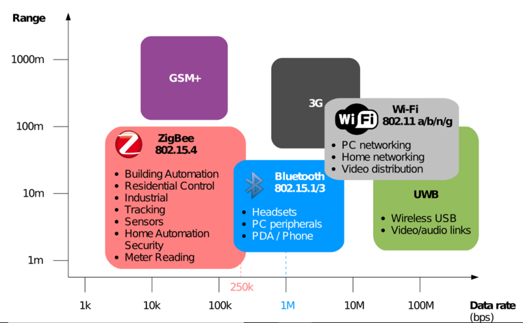

Présentation du projet
La pollution atmosphérique est devenue un enjeu majeur de santé publique. En
effet, au vue des connaissances actuelles, de nombreuses études démontrent que la
pollution de l’air a un impact sur la vie d’un individu résidant depuis plus de 30 ans dans
une agglomération française : son espérance de vie peut être réduite de 5 à 7 mois. De
plus, elle peut ainsi être à l’origine de nombreux problèmes respiratoires (toux, asthme) et
d’irritations nasales, des yeux et de la gorge.
De plus en plus de foyers veillent donc à la qualité de leur air intérieur, notamment
lorsqu’il y a présence d’enfants ou de personnes ayant des problèmes respiratoires. De
plus, cette nécessité de contrôler la qualité de l’air intérieur doit s’accompagner d’un
confort thermique en conservant une certaine température et humidité.
C’est donc dans ce contexte que l'équipe composée de Bhatti Thayeeba, Constant Valentin, Dali Cyrine,
Feng Yunhan, Laba Rita, Leconte Loïc et Ngassa Nelly, a travaillé sur le projet de concevoir une balise
permettant de mesurer la qualité de l’air intérieur et du confort thermique.
Un binôme d'étudiants en 4ème année d'école d'ingénieur : Fouquet Gabriel et Pidoux-Vidal Antoine, ont par
la suite repris ce projet dans le but d'avancer dans sa réalisation.
Le Cahier Des Charges (CDC)
Le cahier des charges (ou CDC) établi en amont par les tuteurs du projet a permis de comprendre les attentes, les spécificités et les contraintes de ce projet. En d’autres termes, c’est à travers le cahier des charges que l'équipe des 7 étudiants a pu apercevoir la charge de travail et la répartition des tâches.
Résultats Attendus
- Choix de capteurs pertinents pour la surveillance du confort thermique et de la qualité de l’air intérieur.
- Réalisation d’une balise connectée intégrant les différents capteurs, l’acquisition et l’enregistrement des données.
- Réalisation d’un serveur de stockage et d’affichage web.
- Récolte de données issues de différentes conditions environnementales (en intérieur).
- Traitement et comparaison des données obtenues.
Vous pouvez télécharger le rapport de l'équipe formée des 7 étudiants en cliquant sur le bouton ci dessous :
Rapport du Projet
Travaux réalisés par G. Fouquet et A. Pidoux-Vidal
Le binôme d'étudiant a travaillé sur plusieurs axes. Tout d'abord, leur travail s'est focalisé sur
la prise en main du projet et son côté technique, réalisation de séries de mesures afin d'analyser et interpréter les données
récoltés, recherches sur les différentes technologies de transfert de données dans le but de les
afficher sur un périphérique externe. Par la suite, le binôme travailla sur le design et l'esthétique
du projet avec la conception d'une enveloppe pour la balise et la création et developpement de ce site web.
Cependant, des problèmes liés au fonctionnement des capteurs ont été rencontrés lors de la première série de mesure... .
Les technologies de transfert de données
Voici un graphique résumant les différentes technologies de tranfert de données :
Design de l’enveloppe de la balise
Il s'agit ici de créer une boîte fonctionnelle et pouvant contenir la carte électronique ainsi que tous les capteurs des paramètres étudiés (la température, l'humidité, le CO2, etc).
.png)
A gauche, un aperçu du design obtenu pour l'enveloppe de la boite :
Les trous présents sur le dessus et le côté de la boite favorisent la circulation de l'air dans l'enceinte
de cette dernière pour une meilleure efficacité des capteurs de C02, de composés organiques volatiles (COV) et
de particules fines. Des améliorations peuvent être apportées comme une grille de ventilation à la place des trous et
le placement d'un écran d'affichage de conseils et alertes destinés à l'utilisateur de la balise.
Le site web du projet
Un des points sur lequel G. Fouquet et A. Pidoux-Vidal ont travaillé est le développement de ce site. Il a pour but de faire découvrir
les enjeux d'hygiène et de santé liés à la qualité de l'air intérieur et les travaux sur un projet pouvant répondre à ces enjeux.
Le site est voué à évoler. La partie responsive du site gagnerait à être optimisée et une section "article" ou "forum" pourra être développée.